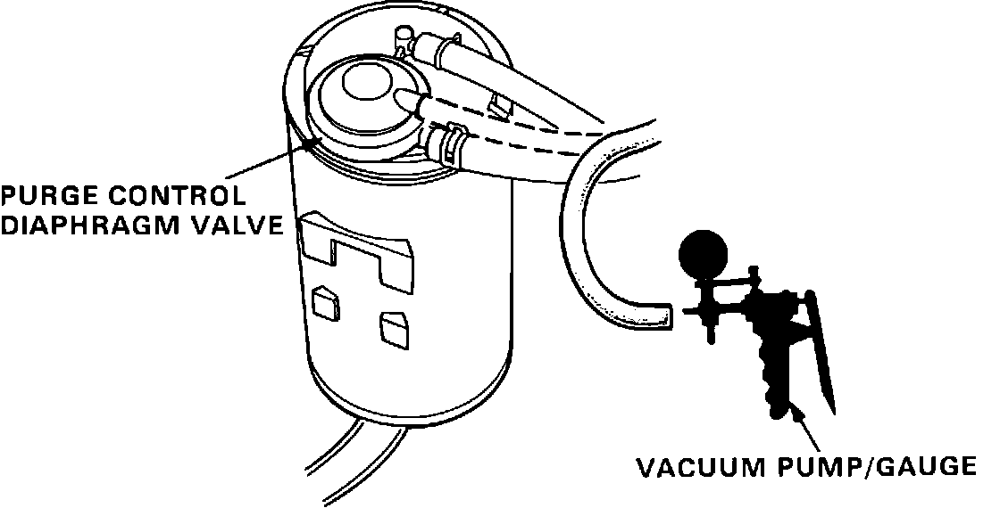
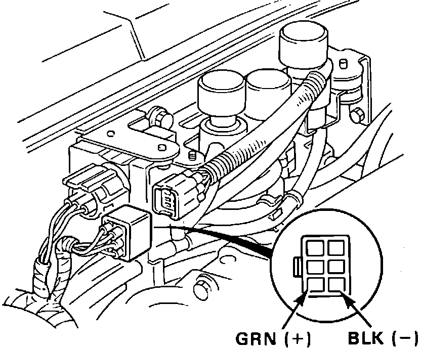
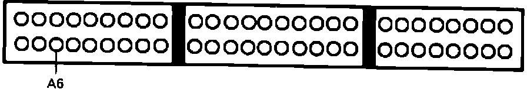

Canister Purge Solenoid: Testing and Inspection
Purge Cut-Off Testing:

1. Verify that engine coolant temperature is below 140° (60°) before proceeding.
2. Disconnect vacuum hose #7 from charcoal canister and connect vacuum gauge to hose.
3. Start engine and idle.
4. Observe vacuum gauge.
Vacuum, proceed to step 12.
No vacuum, proceed to next step.
5. Allow engine to run until cooling fan comes on.
6. Stop engine.
7. Start engine with throttle valve slightly open.
8. Observe gauge after 5 seconds.
Vacuum, proceed to next step.
No vacuum, proceed to step 10.
9. Purge cut-off solenoid functioning properly, for further evaporative control system testing, refer to EMISSION CONTROLS.
10. Disconnect 6 wire connection near purge cut-off solenoid at firewall.
Vacuum, proceed to next step.
No vacuum, replace solenoid. End of test.
11. Replace electronic control unit. End of test.
Purge Cut-Off Testing:

12. Disconnect 6 wire connector for purge cut-off solenoid at firewall.
13. Measure voltage between GRN and BLK terminals.
Battery voltage, replace solenoid. End of test.
No battery voltage, proceed to next step.
14. Measure voltage between GRN terminal and ground.
Battery voltage, proceed to next step.
No battery voltage, proceed to step 16.
15. Repair open in BLK wire between 6 wire connector and ground. End of test.
16. Turn ignition off.
Purge Cut-Off Testing:

17. Install test harness to main harness only. If test harness is not available, carefully backprobe wires at ECU connector.
18. Check for continuity of GRN wire between ECU terminal A6 and 6 wire connector.
Continuity, proceed to step 20.
No continuity, proceed to next step.
19. Repair open in GRN wire between ECU terminal A6 and 6 wire connector. End of test.
20. replace electronic control unit.